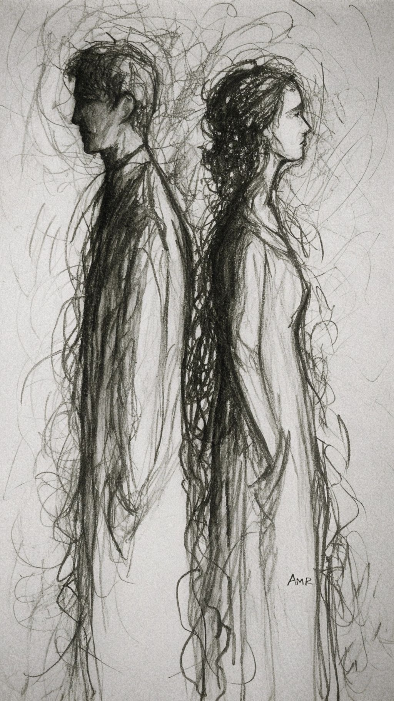
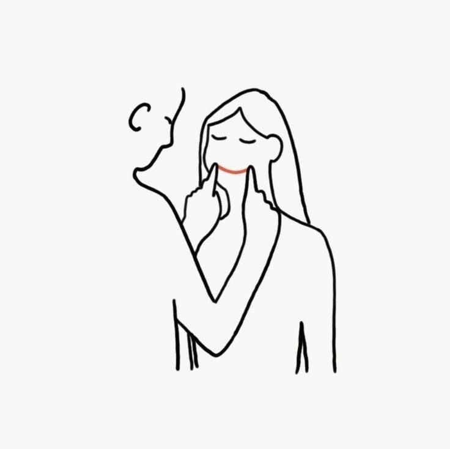

Difficult Times
'">
अध्याय 4: दोनों के बीच के हालातों से मजबूर होना पड़ा एक दूसरे से दूर
The circumstances were not in their favor, and they got separated. Both of them were broken. But the guy, whose feelings were true, shattered into infinite pieces. At the same time, he faced family problems, a death, and what not. Completely broken, he fell into depression when it felt like everything had ended. Yet, he chose to rise above all the miseries and fought his way out.
अध्याय 6: पुनः मिलन
The girl had developed very strong feelings toward the man. She requested him to give her a chance again, and the man agreed. But this time, he was very cautious. The girl put in a lot of effort to win him back, but the man, with his wounds, flashbacks, and ego, was moving gradually. Disagreements started again, but this time the girl kept her patience, wanting to sort things out between them.
अध्याय 7: मिट्टी के मकान
Things between them started going smoothly, all because of the girl's efforts. The man's attitude was getting lenient, but at a pace which the girl couldn't wait for. Slowly, their fragile foundation was being rebuilt.
अध्याय 9: प्यार की ईंटों से बना नया रिश्तों का महल

New Beginning
'">
आपने ये मौका देके मुझपे बहुत अहसान किया है, मैं आपको कोई भी शिकायत का मौका नहीं दूंगा। मैं उम्मीद करता हूं कि इस नए महल में सिर्फ और सिर्फ हमारा प्यार घर करे और भगवान हमें हर प्रकार की नज़र और परेशानियों से बचा के रखे। मैं आपको बता नहीं सकता कि आपको अपने बाहों में भरके जो सुख मिलता है वो अपनी प्यारी माँ के पर दबाने जितना अनमोल है।
तुम्हारा सुमित